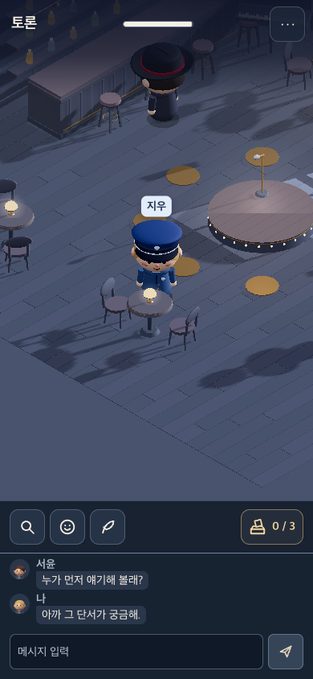

미니피아 디자인 시안
작은 재즈 바
테이블 가까이 모이고, 친구의 얼굴을 보며 이야기해요.
기존 토론
내 캐릭터를 따라가는 넓은 구도

짧은 자유 이동
걸을 수 있는 폭을 기존의 약 ⅔로
바닥을 눌러 걸어보세요
서연 테이블에서 얘기할까요?
민준 좋아요.
메시지 보내기
4인 · 한 테이블
이름표와 얼굴을 한 화면에
이름표를 눌러 발언 확인
지호 나는 창가 쪽에 있었어.
민준 그때 피아노 소리는 안 들렸어?
메시지 보내기
8인 · 발언자 가까이
한 사람에게 집중하고 모두를 바로 선택
얼굴을 눌러 발언 확인
지호 나는 창가 쪽에 있었어.
민준 그때 피아노 소리는 안 들렸어?
메시지 보내기